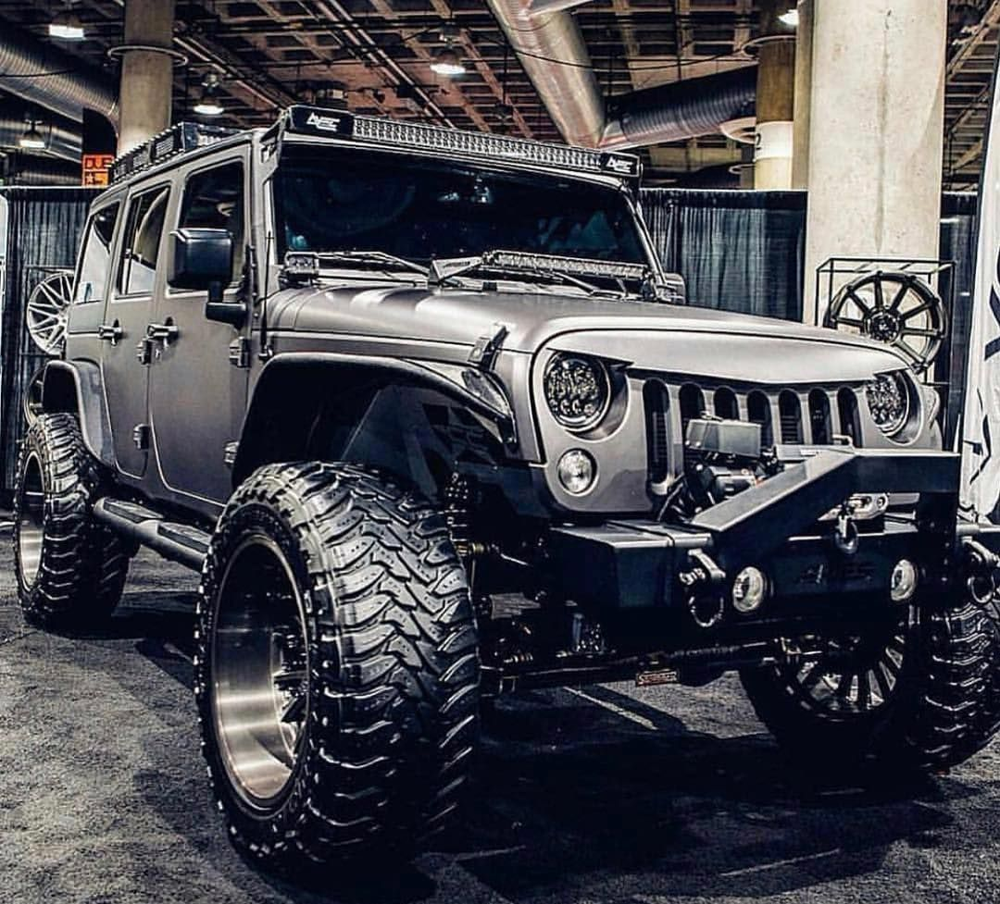

Jeep wordmark.svg
Type
Division
Industry Automotive
Predecessor Kaiser Jeep Edit this on Wikidata
Founded 1943 trademark application [1]
1945 first Jeep branded product launched
Headquarters Toledo, Ohio, U.S.
Area served
Worldwide (except Cuba, Syria, Iran, North Korea, and Sudan)
Key people
Christian Meunier (President of the Jeep brand, worldwide)[2]
Products
Sport utility vehicles
Luxury vehicles
Owner Fiat Chrysler Automobiles
Parent
Willys-Overland (1943–1953)
Kaiser-Jeep (1953–1970)
American Motors Corporation (1970–1986)
Chrysler (1987–present)
Website www.jeep.com
Jeep is a brand of American automobile and also a division of FCA US LLC (formerly Chrysler Group, LLC), a wholly owned subsidiary of the Italian-American corporation Fiat Chrysler Automobiles.[3][4] Jeep has been part of Chrysler since 1987, when Chrysler acquired the Jeep brand, along with remaining assets, from its previous owner American Motors Corporation (AMC).
Jeep's product range consists solely of sport utility vehicles – both crossovers and fully off-road worthy SUVs and models, including one pickup truck. Previously, Jeep's range included other pick-ups, as well as small vans, and a few roadsters. Some of Jeep's vehicles—such as the Grand Cherokee—reach into the luxury SUV segment, a market segment the 1963 Wagoneer is considered to have started.[5] Jeep sold 1.4 million SUVs globally in 2016, up from 500,000 in 2008,[6][7] two-thirds of which in North America,[8] and was Fiat-Chrysler's best selling brand in the U.S. during the first half of 2017.[9] In the U.S. alone, over 2400 dealerships hold franchise rights to sell Jeep-branded vehicles, and if Jeep were spun off into a separate company, it is estimated to be worth between $22 and $33.5 billion—slightly more than all of FCA (US).[8][7]